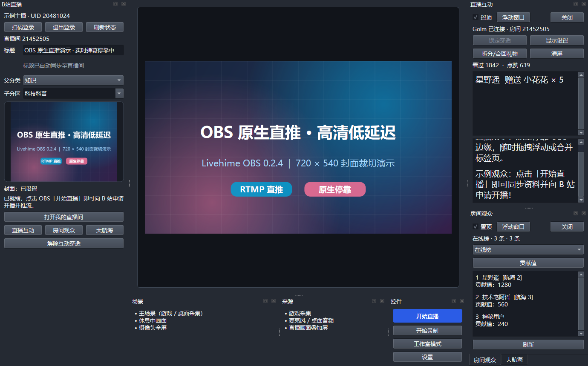

点 OBS 原生按钮直接开停播
直接联动 OBS「控件」里的原生「开始直播 / 停止直播」按钮和延迟推流入口。开播前自动确保标题、封面已同步到位；断线可重连同一场；下播成功后自动恢复你开播前的 OBS 推流服务。
Livehime OBS 将哔哩哔哩直播姬的开播与互动能力原生移植进 OBS Studio。 既不用受限于官方第三方推流码的 5000 粉门槛或靠油猴脚本手动复制，也不用再开着直播姬做本地 RTMP 中转——点 OBS「控件」里的原生按钮即可联动两端开停播，断线可重连同一场，下播成功后自动恢复原 OBS 推流服务；登录会话使用当前 Windows 用户的 DPAPI 加密，本场推流密钥只留在进程内。

如果你习惯用 OBS 的场景编排、滤镜插件和多音轨能力，过去往往只能在「受限于 5000 粉推流码 / 脚本手动复制」或「开着直播姬做本地 RTMP 中转」之间二选一。
在一个 OBS 窗口内完成开播前准备、原生推流联动、互动看弹幕与异常提醒，所有窗口随 OBS 布局记忆。
直接联动 OBS「控件」里的原生「开始直播 / 停止直播」按钮和延迟推流入口。开播前自动确保标题、封面已同步到位；断线可重连同一场；下播成功后自动恢复你开播前的 OBS 推流服务。
面板内用哔哩哔哩 App 扫码登录，不读取系统浏览器账号文件。登录会话使用当前 Windows 用户的 DPAPI 加密保存，开播取得的推流密钥仅留在当前运行内存中，主播无需复制、也不会写入硬盘。
把直播姬常用的开播设置移植进 OBS 面板：标题停止输入 5 秒后自动同步；父分类与子分区联动支持打字搜索；点击封面选图即可拖动、滚轮缩放并裁成标准 4:3 直接上传。
「直播互动」「房间观众」「大航海」都可以停靠在 OBS 边缘或合并成标签页。礼物和弹幕一起显示，拖动分隔线可调整弹幕和进场区的高度。OBS 会记住布局。
开启「锁定穿透」后，仍可点击弹幕输入框打字、按回车或点击「发送」。其余区域的点击会落到后面的游戏或桌面。使用浮窗时，OBS 主窗口保持原来的层级。
对齐直播姬的警告与切断提示流程。即使你隐藏了互动面板或正开着鼠标穿透，收到平台超管警告、内容整改提醒或切断通知时，OBS 主窗口仍会第一时间弹窗并响起警告音，支持一键打开违规记录。
点下面标签切换不同面板截图，点击右侧或下方图片可放大查看细节。
把「B站直播」和弹幕、榜单面板直接停靠在 OBS 四周，布局会随着 OBS 自动保存，下次打开自动还原；左下角直接点 OBS 原本的「开始直播」即可开播。
提供标准 Windows 安装程序，支持老版本直接升级，不会覆盖你原本的 OBS 场景、滤镜和设置。
先完全关闭 OBS，下载并运行 livehime-obs-0.4.6-windows-x64-setup.exe。使用安装器安装的旧版可直接升级。0.4.0 起会从 npm 检查和下载更新，优先使用国内镜像。正常退出所有 OBS 实例后才打开安装向导。
启动 OBS，在顶部「停靠窗口 / Docks」菜单勾选「B站直播」。点击「扫码登录」并用哔哩哔哩 App 扫码确认即可加载你的直播间。
确认标题、分区和封面后，直接点 OBS「控件」里的原生「开始直播」按钮开播；下播时再点一次「停止直播」即可。
.zip 包；但已用安装器安装过的请继续用安装器升级，避免同时存在两份插件。